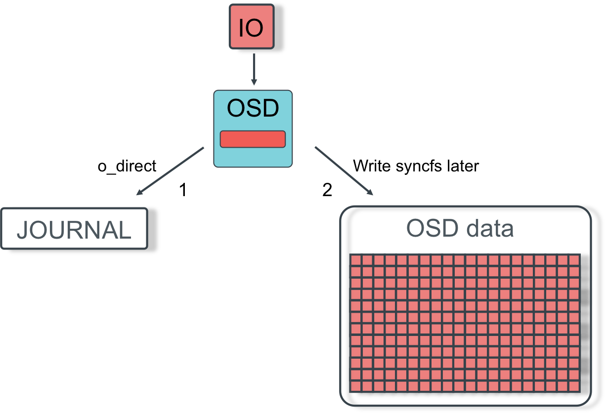

OSD
Данилов Константин, Mirantis
http://koder-ua.blogspot.com/
https://github.com/koder-ua/
OSD
Store user data, essentially an RPC to drive
Replication
Data storage
Journal + main storage
All data stored twice 
Journal
Small cycle buffer
File or partition
Works in a sync mode
Client would not get write ack, untill data reach journal on all nodes
In most cases broken journal means broked OSD
Main storage
Files in folder
Async mode
Eventually sync to disk (5s by default)
sudo ceph daemon osd.0 config show | grep filestore
sudo ceph daemon osd.0 config show | grep filestore_max_sync_interval
Recommendation
Journal in separated partition
4-6 journals per SSD
J. size = 2 * filestore_max_sync_interval * OSD_BW (~10Gb)
Increasing filestore_max_sync_interval increases performance, but leads to "freeses"
Main storage
OSD weight
sudo ceph daemon osd.0 config show | grep osd_data
sudo ceph daemon osd.0 config show | grep osd_journal
/var/lib/ceph/osd/ceph-XXX
/var/lib/ceph/osd/ceph-XXX/journal
ls -l /var/lib/ceph/osd/ceph-0
ls -l /var/lib/ceph/osd/ceph-0/current
Main storage
OSD during start up:
Replay uncommited operations from journal
Peering all PG with other OSD
Receive all missed updates
Write sequence
Client map object on PG
Client uses Crush to map PG+Pool onto set of OSD
Client connect to primary OSD and send write using public network
Primary OSD write data to journal, main storage and on other OSD using cluster network
Client get ack, when all OSD commits journal
OSD acting set
full_ratio, nearfull_ratio
sudo ceph daemon osd.0 config show | grep cluster_network
sudo ceph daemon osd.0 config show | grep public_network
Read data
Client map object on PG
Client uses Crush to map PG+Pool onto set of OSD
Client end read request to primary OSD
/